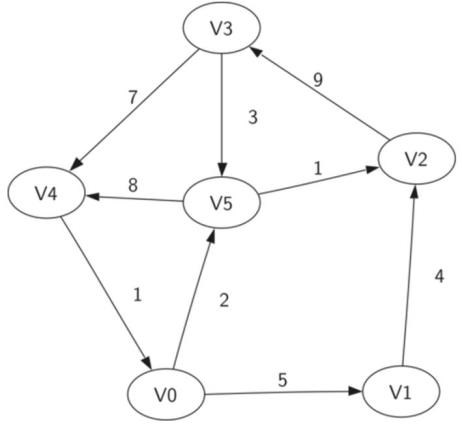

- 理解图的概念及使用
- 通过多种方法实现图抽象数据类型
- 了解图如何用于解决不同领域的问题
图是比我们上一章学习的树更普遍的结构，事实上你可以认为树是一种特殊的图。图可以被用来表述世界上很多有趣的事情，包括道路系统，城市间航线，因特网的联接，甚至是你完成计算机科学学位所必修的课程顺序。我们在这一章将看到一旦我们很好地表述了某个问题，我们可以使用标准的图算法来解决一些看起来非常困难的问题。
Graph - 图
图的表示通常使用邻接矩阵和邻接表，前者易实现但是对于稀疏矩阵会浪费较多空间，后者使用链表的方式存储信息但是对于图搜索时间复杂度较高。
概念词 | 定义 |
顶点 Vertex | 顶点（也称“节点 node”）是图的基础部分。它具有名称标识“key”。顶点也可以有附加的信息项“playload”。 |
边 Edge | 图的另一个基础组成部分。如果一条边连接两个顶点，则表示两者具有联系。边可以是单向的，也可以是双向的。如果一个图中的边都是单向的，我们就说这个图是“有向图 directed graph/digraph”。 |
权重 Weight | 为了表达从一个顶点到另一个顶点的“代价”，可以给边赋权。例如，一个连接两个城市的道路图中，两个城市之间的距离就可以作为边的权重。 |
图可以用 G=(V,E)来表述 | V是顶点的集合，E是边的集合。每个边是一个元组(v, w)，w, v∈V。 我们可以在边元组中加入第三个要素来表述权重。 |
路径 Path | 由边依次连接起来的顶点序列。 我们将路径定义为 P=(w1, w2,…, wn)，其中对于所有 1<=i<=n-1, (wi, wi+1) ∈ E。 无权路径的长度为边的数量，等于 n-1。 带权路径的长度为所有边权重之和。 |
圈 Cycle | 有向图里的圈是首尾顶点相同的路径。 没有圈的图称为“无圈图 acyclic graph” 没有圈的有向图称为“有向无圈图 directed acyclic graph或 DAG” |
图 7.2展现了另一个简单有向赋权图。这个图可以表示成6个顶点：
V={V0, V1, V2, V3, V4, V5}
及9条边的集合：
E={(v0,v1,5),(v1,v2,4),(v2,v3,9),(v3,v4,7),(v4,v0,1),(v0,v5,2),(v5,v4,8),(v3,v5,3),(v5,v2,1)}

图 7.2有向图的简单例子
图 7.2中的图展现了其他两个重要的图的术语：
图抽象数据类型
ADT | 定义 |
Graph() | 创建一个空的图 |
addVertex(vert) | 将一个顶点 Vertex对象加入图中 |
addEdge(fromVert, toVert) | 添加一条有向边 |
addEdge(fromVert, toVert, weight) | 添加一条带权的有向边 |
getVertex(vertKey) | 查找图中名称为 vertKey的顶点 |
getVertices() | 返回图中所有顶点列表 |
in | 按照 vert in graph的语句形式，返回顶点是否存在图中。如果存在则返回True，否则返回False |
有几种方法可以在 Python实现图抽象数据结构（ADT），需要在不同的应用中加以权衡。图的实现有两个著名的方法，邻接矩阵 adjacency matrix和邻接表 adjacency list。我们将说明这两种不同的选择，并作为 Python的类来实现邻接矩阵。
编程实现
邻接矩阵
设顶点个数为 V, 那么邻接矩阵可以使用 V × V 的二维数组来表示。
g[i][j]表示顶点i和顶点j的关系，对于无向图可以使用0/1表示是否有连接，对于带权图则需要使用INF来区分。有重边时保存边数或者权值最大/小的边即可。
Python
g = [[0 for _ in range(V)] for _ in range(V)]
邻接表
一个实现稀疏图的更高效的方案是使用邻接表 adjacency list。在这个实现方法中，我们维护一个包含所有顶点的主列表（master list），主列表中的每个顶点，再关联一个与自身有边连接的所有顶点的列表。在实现顶点类的方法里，我们使用字典而不是列表，此时字典中的键（key）对应顶点标识，而值（value）则可以保存顶点连接边的权重。图7. 4展现了图7.2中图的邻接表。

在我们实现图表抽象数据类型时，我们可以创建两个类，Graph和 Vertex（详见表一和表二）。
Graph保存了包含所有顶点的主表，Vertex则描绘了图表中顶点的信息。
每一个Vertex使用一个字典来记录顶点与顶点间的连接关系和每条连接边的权重，这个字典被称作connectionTo（self. connectionTo）。
构造函数（__init___）简单地初始化了（一般为字符串的）id和 connectionTo字典。
addNeighbor方法被用来添加从一个顶点到另一个顶点的连接。
getConnections方法用以返回以connectionTo字典中的实例变量所表示的邻接表中的所有顶点。
getWeight方法可以通过一个参数返回顶点与顶点之间的边的权重。
class Vertex:
def __init__(self, key):
self.id = key
self.connectedTo = {}
def addNeighborf(self, nbr, weight=0):
self.connectedTo[nbr] = weight
def __str__(self):
return str(self.id) + ' connectedTo: ' + str([x.id for x in self.connectedTo])
def getConnections(self):
return self.connectedTo.keys()
def getId(self):
return self.id
def getWeight(self, nbr):
return self.connectedTo[nbr]
下表实现的 Graph 类，包含了一个将顶点名称映射到顶点对象的字典。
Graph 也提供了向图中添加顶点和将一个顶点与另一个连接起来的方法。
getVertices 方法可以返回图中所有顶点的名称。
实现__iter__方法简化对特定图中所有顶点对象的遍历。
class Graph:
def __init__(self):
self.vertList = {}
self.numVertices = 0
def addVertex(self, key):
self.numVertices = self.numVertices + 1
newVertex = Vertex(key)
self.vertList[key] = newVertex
return newVertex
def getVertex(self, n):
if n in self.vertList:
return self.vertList[n]
else:
return None
def __contains__(self, n):
return n in self.vertList
def addEdge(self, f, t, cost=0):
if f not in self.vertList:
nv = self.addVertex(f)
if t not in self.vertList:
nv = self.addVertex(t)
self.vertList[f].addNeighbor(self.vertList[t], cost)
def getVertices(self):
return self.vertList.keys()
def __iter__(self):
return iter(self.vertList.values())
WORD LADDER 词梯问题
比如，将单词“ FOOL”转变成单词“ SAGE”。在词梯问题中，你必须以一次只改变一个字母的方式来逐步转变单词。每一步你都必须将一个单词转变成另一个单词，并且不允许转变成一个不存在的单词。
在两个仅差一个字母的单词之间连一条边。如果我们可以创建一个这样的图表，那么任一从一个单词到另一个单词的路径都是某个词梯问题的一个解。

- 先假设我们有一个单词列表,其中的单词都是一样长。
- 为列表里的每个单词在图中创建一个顶点。
- 而为将这些单词连接起来，我们可以将列表中的每个词与所有其他单词比较。当我们比较的时候，我们想要看到有多少字母是不同的。如果这两个词只有一个字母不同，我们就可以在图中创建一条连接它们的边。
- 假设我们有非常多的桶,每个桶外都贴有一个四个字母的单词标签，并且标签上有且仅有一个字母被‘ _’(通配符)所代替。例如，考虑图7.6,我们就可能会将一个桶贴上“ pop_”， 当我们处理我们的列表中的每个词，都将其与每个桶比较，使用“_” 作为一个通配符,那么“pope” 和“ pops” 都与“ pop_”匹配。每次我们找到一个匹配的桶,我们把单词放在桶里。一旦我们把所有单词都放在适当的桶里，我们便知道，同一个桶里的所有单词都是相互连接的。

实现广度优先搜索(BFS)
在建立了词梯问题的图之后，我们就能把注意力转向寻找最短单词变化序列的算法，我们将要用到的这一图算法被称作广度优先搜索(BFS)算法。
已知一个图 G 和它的一个起始顶点 s，广度优先搜索(BFS)通过搜索图中的边来找到图G中所有和s有路径相连的顶点。
其显著的特点是在搜索达到距离 k+1 的顶点之前，BFS会找到全部距离为 k 的顶点。
有一个很好的方法去想象广度优先搜索（BFS）的运行原理，那就是建造一棵以 s 为根的树的过程，一次建造树的一层，同时，广度优先搜索(BFS)在增加层次前，会保证将始顶点所有的子顶点都添加在了树中。
为了进一步追踪这一过程，这里的 BFS 算法在搜索过程中，会给每一个顶点染色为白色、灰色或黑色。
每一个顶点在被构建时都被初始化为白色，在这之后，白色代表的是尚未被发现的顶点。当一个顶点被第一次发现后，它被染成灰色
当广度优先搜索(BFS)完全探索完一个顶点后，它被染成黑色。
这意味着一旦一个节点染成了黑色，它就没有邻近的白色节点；而另一方面，如果一个顶点被标识为了灰色，这就意味着其附近可能还存在着未探索的顶点等待被探索。
广度优先搜索（BFS） 从起始顶点 s 开始，此时 s 的颜色被设置为灰色，代表它现在已经被发现了，另外两个参数——距离和父顶点，对于起始节点 s 初始设置为了 0 和 None。随后，起始节点会被加入到一个队列中，下一步便是系统地探索队首顶点。这个过程通过迭代（遍历）队首顶点的邻接列表来完成，每检查邻接表中的一个顶点，便会维护这个顶点的颜色参量，如果颜色是白色的，就说明这个节点尚未被探索，也就会按下述四步操作：
1、 新的未探索的顶点 nbr，标记为灰色；
2、 nbr 的父顶点被设置为当前节点 currentVert；
3、 nbr 的距离被设置为当前节点的距离加一；
4、 nbr 被加入队尾，这一操作使得直到 nbr 在当前顶点的邻接列表中的所有顶点被搜索完后，才能够进行下一层次的探索操作。
骑士周游问题
骑士周游问题是在国际象棋棋盘上仅用“骑士”这个棋子进行操作。问题的目的是找到一条可以让骑士访问所有格子，并且每个格子只能走一次的走棋序列。一个这样的走棋序列称为一次“周游”。
尽管现在研究人员已经研究了很多不同的算法来解决骑士周游问题，图搜索依旧是最便于理解和编写的算法之一。
- 将棋盘上合法的走棋次序表示为一个图
- 采用图搜索算法搜寻一个长度为（行×列 - 1）的路径，此路径上恰包含每个顶点一次